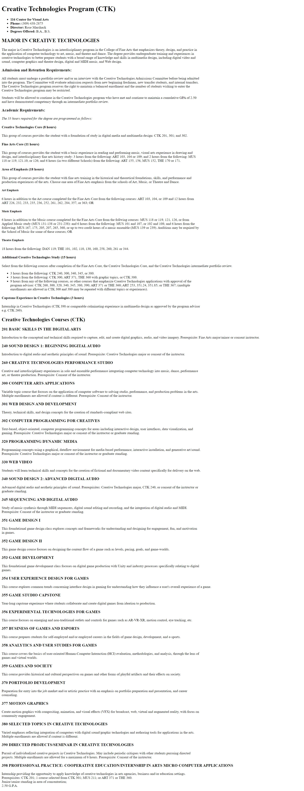
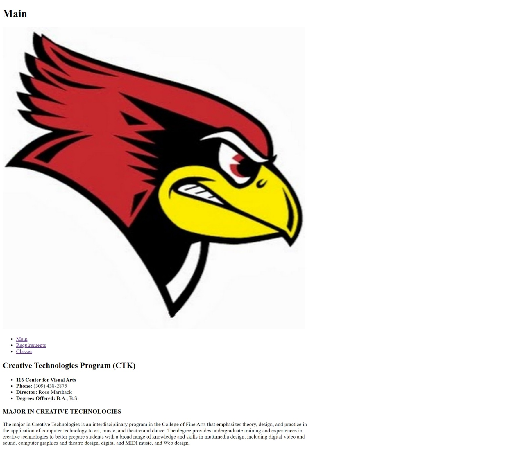
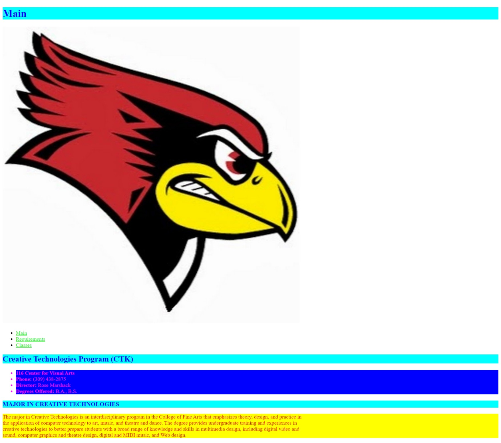
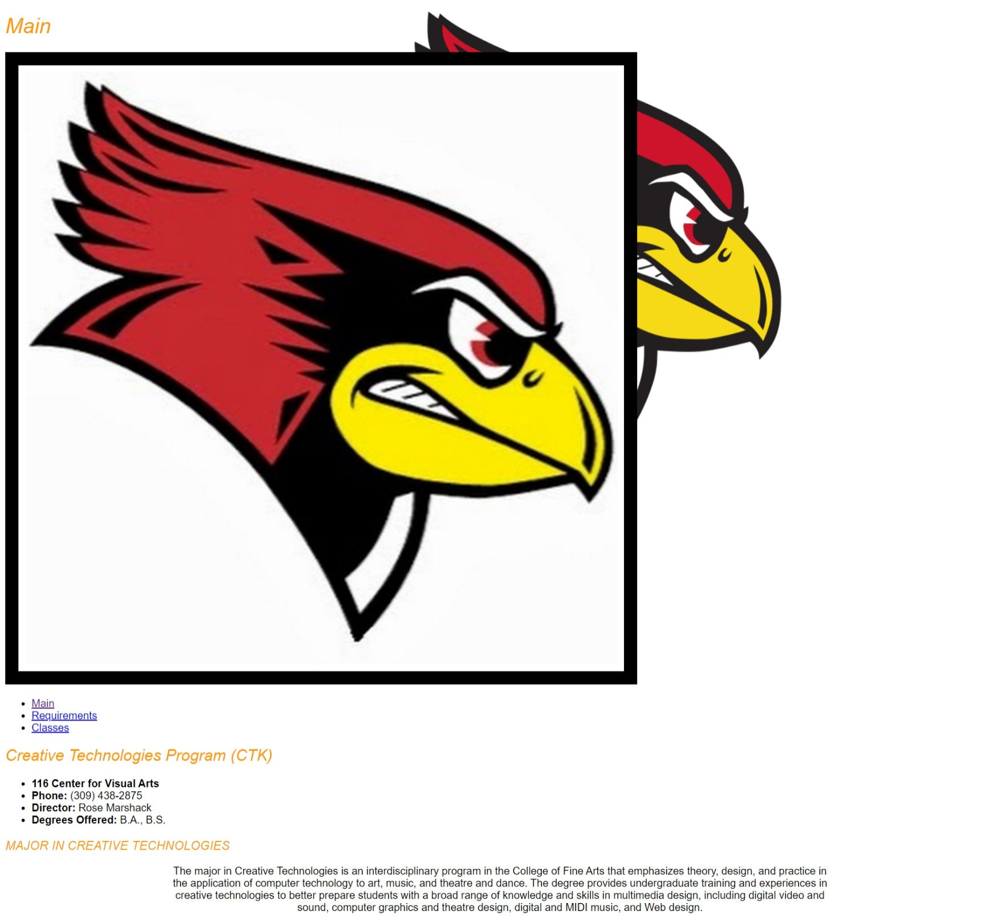
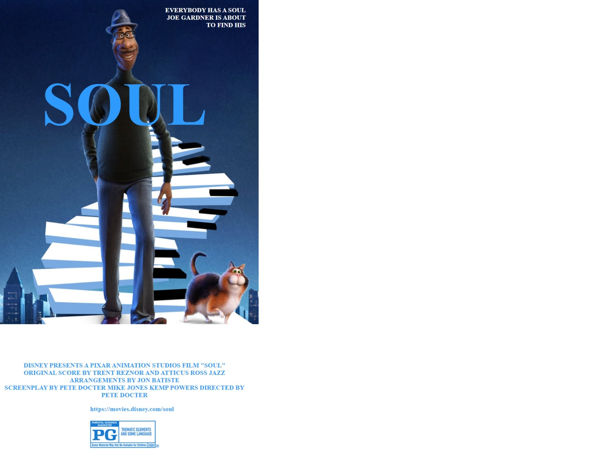
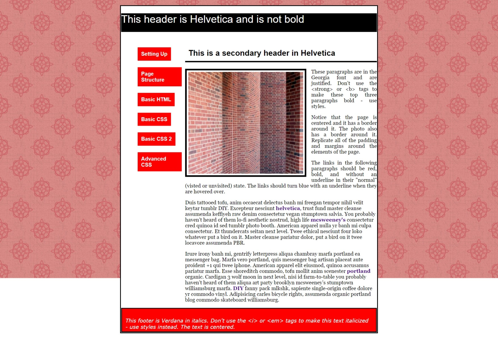
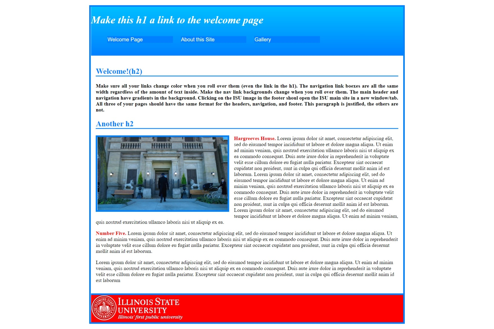
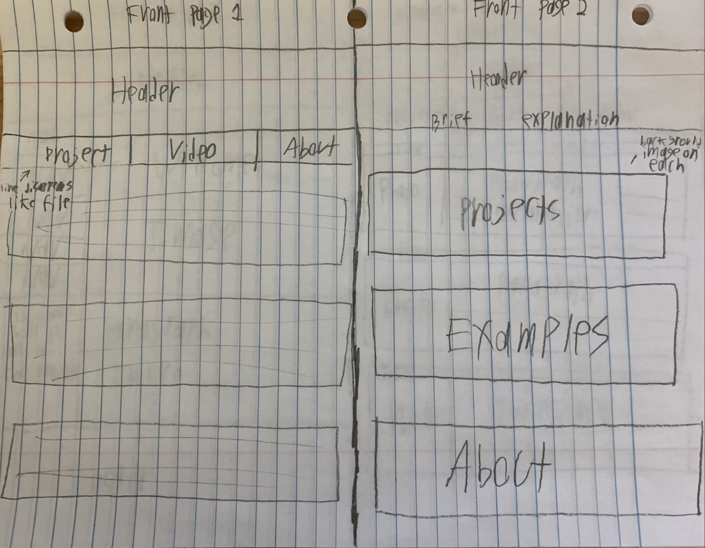
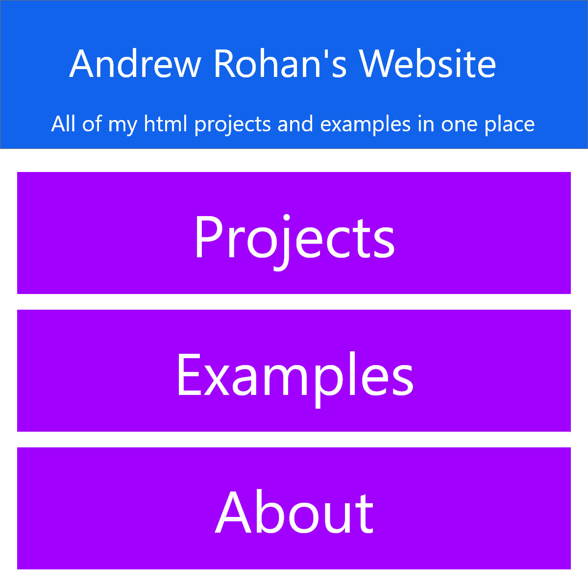

Project 1
{kind=link}
Basic Page Structure and HTML: This is my first real html project, where I was given a long list of text that was disorganized, and I had to add headers, paragraph tags, line breaks, and other text related tags to make the page look nice..
Project 2
{kind=link}
Basic HTML, continued: For this project, I had to create an ISU website with images and navigation and make it look presentable.
Project 3
{kind=link}
Basic CSS: For this one, we took Project 2 and added text color and decoration using CSS.
Project 4
{kind=link}
Basic CSS, continued: In project 3, I took the html submitted in the previous week and had to add more of the basics of css on top of it. This involved changing the font family, adding background images, aligning text, and adding borders and padding.
Project 5
{kind=link}
Advanced CSS, Part 1: Project 5 involved adding padding and borders to specific sides of the elements to put them into place on the html, and using width to keep things properly sized. This created a movie poster.
Project 6
{kind=link}
Advanced CSS, Part 2: This project used more CSS elements like floating images, horizontal lists, and creating a css grid to create a site layout.
Project 7
{kind=link}
Midterm: Project 7 took all of the elements that I had learned thusfar to create and advanced webpage. Certain elements like the images were provided to match the template we were given.
Project 8
{kind=link}
Sketches: For this project, I had to make mockups of my portfolio website, on the right is the final design I chose to go with for the frontpage of this website.
Project 9
{kind=link}
Mockups: I used Adobe XD to create the mockup for the front page of this website>